1020A20 CRANKCASE OIL SUMP - R.R CLEAN SURFACES FOR SEALANT APPLICATION
- Path
- Procedures > 10 ENGINE > 1020 CRANKCASE SUMP AND COVERS > 1020A CRANKCASE OIL SUMP > 1020A20 CRANKCASE OIL SUMP - R.R CLEAN SURFACES FOR SEALANT APPLICATION
- Kind
- repair procedure (removal / refitting; the operation number is the code)
- Applies to
- engines: 1.9 JTS, 2.2 JTS, 3.2 JTS, 1.9 JTD 8V, 1.9 JTD 16V; all production periods
- Interactive page
- https://sloeber94.github.io/elrnDB/alfa/159/en/#/939010429
Applies to: engines: 1.9 JTS, 2.2 JTS; all production periods
 Removing
Removing
 Refitting
Refitting- Position the vehicle on a lift.
- Make sure that the ignition key is in the OFF position, then disconnect the battery terminal (-).
Description | Connector | |
|---|---|---|
- | Battery |
Op. 1084A16 OIL DIPSTICK PIPE - R.R
Op. 4450B04 RIGHT FRONT WHEEL - R.R
Op. 7055B66 ENGINE COMPARTMENT DUST COVER IN RIGHT FRONT WHEEL ARCH - R.R.
Op. 1092C26 BELT FROM AIR CONDITIONER COMPRESSOR DRIVING POWER STEERING PUMP - R + R
Op. 1092G10 SINGLE ENGINE BELT - R.R
1. Undo the bolts fixing the lower reaction rod for the power unit, engine crankcase sump side.
2. Undo the drain plug and drain the engine oil.
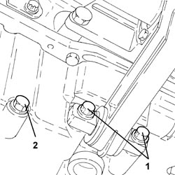
Applies to: engines: 1.9 JTS, 2.2 JTS; all production periods
1. Disconnect the electrical connection from the engine oil level sensor.
Description | Connector | |
|---|---|---|
1 | Engine oil level sensor |
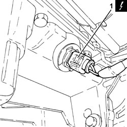
Applies to: engines: 1.9 JTS, 2.2 JTS; all production periods
1. Loosen the two upper bolts (1a) and completely withdraw lower bolt (1b) securing the air conditioner compressor.
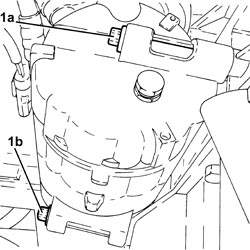
Applies to: engines: 1.9 JTS, 2.2 JTS; all production periods
1. Undo the nuts (1a) and bolts (1b) securing the crankcase sump.
2. Cut the crankcase sump sealant using the tool.
Tool | Description | Function | Validity |
|---|---|---|---|
1870718000 | Blade | Cut the crankcase sump sealant |
3. Remove the crankcase sump (3a) by applying the appropriate tool to points (3b).
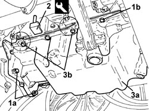
Applies to: engines: 1.9 JTS, 2.2 JTS; all production periods
Refitting
Removing- Clean the residues of sealantfrom the mating surfaces between the engine block and the crankcase sump.
1. Ensure the locating bushes are present on the crankcase.
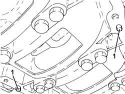
Applies to: engines: 1.9 JTS, 2.2 JTS; all production periods
- Apply a strip of grey silicone sealant to the contact surfaces between the crankcase sump and crankcase as shown in the diagram in the figure.
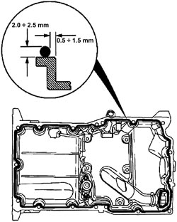
Applies to: engines: 1.9 JTS, 2.2 JTS; all production periods
1. Place the crankcase sump in its housing.
2. Tighten bolts (2a) and (2b) securing the crankcase to the specified torque in the order shown in the figure.
Component | Fastening | dia | Value (daNm) | Validity |
|---|---|---|---|---|
Engine oil sump | Bolt | M8 | (engine block side) 1.8 - 2.2 | 1.9 JTS 2.2 JTS |
Component | Fastening | dia | Value (daNm) | Validity |
|---|---|---|---|---|
Engine oil sump | Bolt | M8 | (gearbox side) 3.6 - 4.2 | 1.9 JTS 2.2 JTS |
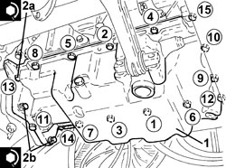
Applies to: engines: 1.9 JTS, 2.2 JTS; all production periods
1. Tighten the air conditioner compressor bolts to the specified torque.
Component | Fastening | dia | Value (daNm) | Validity |
|---|---|---|---|---|
COMPRESSOR | Bolt | M8x90 | 2.2 ÷ 2.6 |
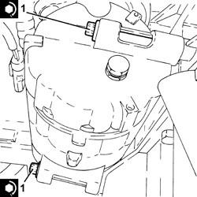
Applies to: engines: 1.9 JTS, 2.2 JTS; all production periods
- Connect the electrical connection to the engine oil level sensor.
1. Tighten the engine oil drain plug to the recommended torque.
Component | Fastening | dia | Value (daNm) | Validity |
|---|---|---|---|---|
Engine oil drain plug | - | M12 | (oil sump side) 2.2 - 2.7 | 1.9 JTS 2.2 JTS |
2. Tighten the bolts fixing the lower reaction rod for the power unit, engine crankcase sump side to the recommended torque.
Component | Fastening | dia | Value (daNm) | Validity |
|---|---|---|---|---|
Power unit lower reaction rod | Bolt | M10 | (engine crankcase sump side) 5.4 - 6.6 |
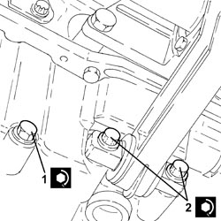
Applies to: engines: 1.9 JTS, 2.2 JTS; all production periods
Op. 1092G10 SINGLE ENGINE BELT - R.R
Op. 1092C26 BELT FROM AIR CONDITIONER COMPRESSOR DRIVING POWER STEERING PUMP - R + R
Op. 7055B66 ENGINE COMPARTMENT DUST COVER IN RIGHT FRONT WHEEL ARCH - R.R.
Op. 4450B04 RIGHT FRONT WHEEL - R.R
Op. 1084A16 OIL DIPSTICK PIPE - R.R
- Connect the negative battery terminal.
Op. 0010T11 ENGINE OIL - CHECK LEVEL AND TOP UP, IF NECESSARY
- Remove the vehicle from the lift.
Applies to: engines: 1.9 JTD 8V, 1.9 JTD 16V; all production periods
Removing
Refitting- Position the vehicle on a lift.
Op. 4450B04 RIGHT FRONT WHEEL - R.R
Op. 7055B66 ENGINE COMPARTMENT DUST COVER IN RIGHT FRONT WHEEL ARCH - R.R.
Op. 7055B91 RIGHT FRONT WHEEL ARCH LINER - R.R.
Op. 7055B54 UNDER ENGINE PROTECTION/GUARD - R.R.
Op. 2710A14 RIGHT HAND DRIVE SHAFT WITH JOINTS - R+R
Op. 1076B72 INTERMEDIATE EXHAUST PIPE WITH HOSE SECTION - R+R
Op. 1048B14 AIR DELIVERY HOSE BETWEEN TURBOCHARGER AND HEAT EXCHANGER - REPLACE
Op. 1084A16 OIL DIPSTICK PIPE - R.R
1. Undo bolts (1a), (1b) and remove the lower power unit reaction link (1c).
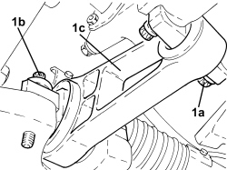
Applies to: engines: 1.9 JTD 8V, 1.9 JTD 16V; all production periods
1. Undo the bolts (1a) and remove the intermediate driveshaft bearing support (1b).

Applies to: engines: 1.9 JTD 8V, 1.9 JTD 16V; all production periods
Op. 1092G10 SINGLE ENGINE BELT - R.R
Op. 1092A10 CRANKSHAFT PULLEY - R + R
- Undo the drain plug on the crankcase sump and leave the oil to drain into a suitable container.
1. Disconnect the electrical connection from the engine oil level sensor.
Description | Connector | |
|---|---|---|
1 | Engine oil level sensor |
2. Loosen the band and disconnect the condensate engine oil recovery pipe from the engine oil vapour separator side, engine crankcase sump side.
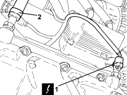
Applies to: engines: 1.9 JTD 8V, 1.9 JTD 16V; all production periods
1. Secure the air conditioner compressor (1a), then unscrew bolts (1b) and move away form the mount.
2. Undo bolts (2a), (2b) and remove the air conditioner compressor mount (2c).
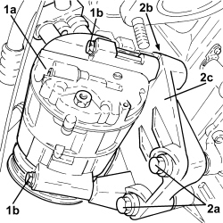
Applies to: engines: 1.9 JTD 8V, 1.9 JTD 16V; all production periods
1. Undo bolts (1a), (1b) and remove the catalytic converter bracket (1c).
2. Undo the nuts (2a) and (2b) securing the crankcase sump.
3. Cut the crankcase sump sealant using the tool.
Tool | Description | Function | Validity |
|---|---|---|---|
1870718000 | Blade | Cut the crankcase sump sealant |
4. Remove the crankcase sump.

Applies to: engines: 1.9 JTD 8V, 1.9 JTD 16V; all production periods
Refitting
Removing- Apply a strip of grey silicone sealant to the contact surfaces between the crankcase sump and crankcase as shown in the diagram in the figure.
1. Place the crankcase sump in its housing.
2. Tighten the nuts (2a) and (2b) securing the crankcase sump to the recommended torque.
Component | Fastening | dia | Value (daNm) | Validity |
|---|---|---|---|---|
Engine oil sump | Bolt | M6 | (front and rear cover side) 0.8 - 1.0 | 1.9 JTD 8V 1.9 JTD 16V |
Component | Fastening | dia | Value (daNm) | Validity |
|---|---|---|---|---|
Engine oil sump | Bolt | M8 | (engine block side) 2.3 - 2.8 | 1.9 JTD 8V 1.9 JTD 16V |
Component | Fastening | dia | Value (daNm) | Validity |
|---|---|---|---|---|
Engine oil sump | Bolt | M10 | (gearbox side) 3.6 - 4.4 | 1.9 JTD 8V 1.9 JTD 16V |
3. Refit catalytic converter mounting bracket (3a) and secure with bolts (3b) and (3c).

Applies to: engines: 1.9 JTD 8V, 1.9 JTD 16V; all production periods
1. Place the air conditioner compressor mount (1a) in its housing and secure it tightening the bolts (1b) and (1c) to the recommended torque.
Component | Fastening | dia | Value (daNm) | Validity |
|---|---|---|---|---|
COMPRESSOR MOUNTING | Bolt | M10x1.25x75 | 4.5 ÷ 5.5 | 1.9 JTD 8V 1.9 JTD 16V |
2. Place the air conditioner compressor (2a) in its housing and fasten it tightening the bolts (2b) to the recommended torque.
Component | Fastening | dia | Value (daNm) | Validity |
|---|---|---|---|---|
COMPRESSOR | Bolt | M8x90 | 2.2 ÷ 2.6 |
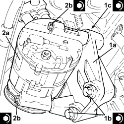
Applies to: engines: 1.9 JTD 8V, 1.9 JTD 16V; all production periods
- Connect the condensate engine oil recovery pipe from the engine oil vapour separator, engine crankcase sump side and tighten the band.
- Connect the electrical connection to the engine oil level sensor.
- Tighten the drain plug on the crankcase sump to the recommended torque.
Component | Fastening | dia | Value (daNm) | Validity |
|---|---|---|---|---|
Engine oil drain plug | - | M18 | (oil sump side) 1.8 - 2.2 | 1.9 JTD 8V 1.9 JTD 16V 2.4 JTD 20V |
Op. 1092A10 CRANKSHAFT PULLEY - R + R
Op. 1092G10 SINGLE ENGINE BELT - R.R
1. Place the intermediate driveshaft bearing support (1a) in position and secure it tightening the bolts (1b) to the recommended torque.
Component | Fastening | dia | Value (daNm) | Validity |
|---|---|---|---|---|
Intermediate driveshaft bearing support | Bolt | M10 | 4.5 ÷ 5.5 | 1.9 JTD 8V 1.9 JTD 16V 2.4 JTD 20V |
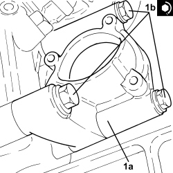
Applies to: engines: 1.9 JTD 8V, 1.9 JTD 16V; all production periods
1. Place the power unit lower reaction rod (1a) in its housing and secure it tightening the new bolts (1b) and the bolts (1c) to the recommended torque.
Component | Fastening | dia | Value (daNm) | Validity |
|---|---|---|---|---|
Power unit lower reaction rod | Bolt (to be replaced) | M12 | (front suspension frame side) 6.3 - 7.7 + 60° |
Component | Fastening | dia | Value (daNm) | Validity |
|---|---|---|---|---|
Power unit lower reaction rod | Bolt | M10 | (engine crankcase sump side) 5.4 - 6.6 |
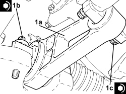
Applies to: engines: 1.9 JTD 8V, 1.9 JTD 16V; all production periods
Op. 1084A16 OIL DIPSTICK PIPE - R.R
Op. 1048B14 AIR DELIVERY HOSE BETWEEN TURBOCHARGER AND HEAT EXCHANGER - REPLACE
Op. 1076B72 INTERMEDIATE EXHAUST PIPE WITH HOSE SECTION - R+R
Op. 2710A14 RIGHT HAND DRIVE SHAFT WITH JOINTS - R+R
Op. 7055B91 RIGHT FRONT WHEEL ARCH LINER - R.R.
Op. 7055B66 ENGINE COMPARTMENT DUST COVER IN RIGHT FRONT WHEEL ARCH - R.R.
Op. 4450B04 RIGHT FRONT WHEEL - R.R
Op. 0010T11 ENGINE OIL - CHECK LEVEL AND TOP UP, IF NECESSARY
Op. 7055B54 UNDER ENGINE PROTECTION/GUARD - R.R.
- Remove the vehicle from the lift.
Applies to: engines: 3.2 JTS; all production periods
Topics linked from this page (19)
- 0010T11 ENGINE OIL - CHECK LEVEL AND TOP UP, IF NECESSARY
- 1004B10 POWER UNIT WITH MANUAL GEARBOX - R.R
- 1004D10 POWER UNIT (MANUAL GEARBOX), REMOVED, DISMANTLE AND REASSEMBLE
- 1004D40 ENGINE - POSITION ON STAND AND REMOVE
- 1004E10 ENGINE, REMOVED - REMOVE CYLINDER HEAD AND OIL SUMP FOR INSPECTION - INCLUDES POSITIONING ON STAND AND REMOVAL
- 1004E20 ENGINE - DISMANTLE AND REASSEMBLE FOLLOWING OPERATION 1004E10 - WASH AND CHECK DISMANTLED PARTS - REFIT CYLINDER HEAD AND OIL SUMP - DOES NOT INCLUDE REPAIRS TO CYLINDER HEAD AND AUXILIARY UNIT
- 1048B14 AIR DELIVERY HOSE BETWEEN TURBOCHARGER AND HEAT EXCHANGER - REPLACE
- 1076B72 INTERMEDIATE EXHAUST PIPE WITH HOSE SECTION - R+R
- 1084A16 OIL DIPSTICK PIPE - R.R
- 1092A10 CRANKSHAFT PULLEY - R + R
- 1092C26 BELT FROM AIR CONDITIONER COMPRESSOR DRIVING POWER STEERING PUMP - R + R
- 1092G10 SINGLE ENGINE BELT - R.R
- 2710A14 RIGHT HAND DRIVE SHAFT WITH JOINTS - R+R
- 4450B04 RIGHT FRONT WHEEL - R.R
- 7055B54 UNDER ENGINE PROTECTION/GUARD - R.R.
- 7055B66 ENGINE COMPARTMENT DUST COVER IN RIGHT FRONT WHEEL ARCH - R.R.
- 7055B91 RIGHT FRONT WHEEL ARCH LINER - R.R.
- A001 BATTERY
- K032 ENGINE OIL LEVEL SENSOR